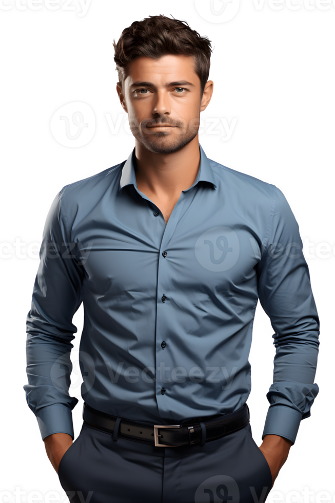
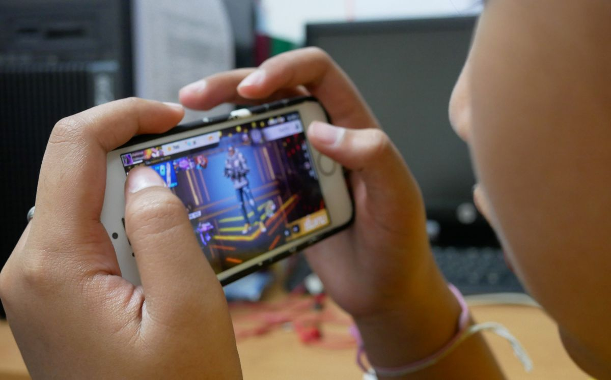
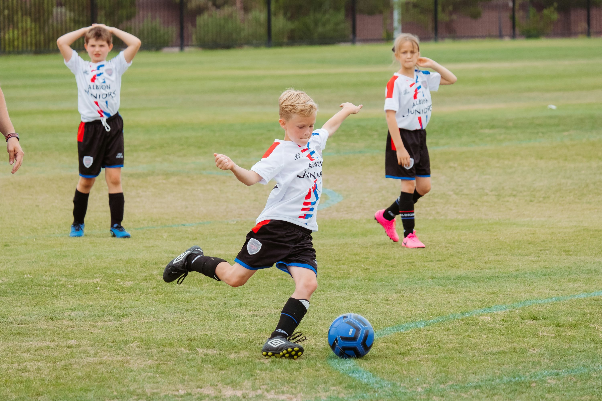
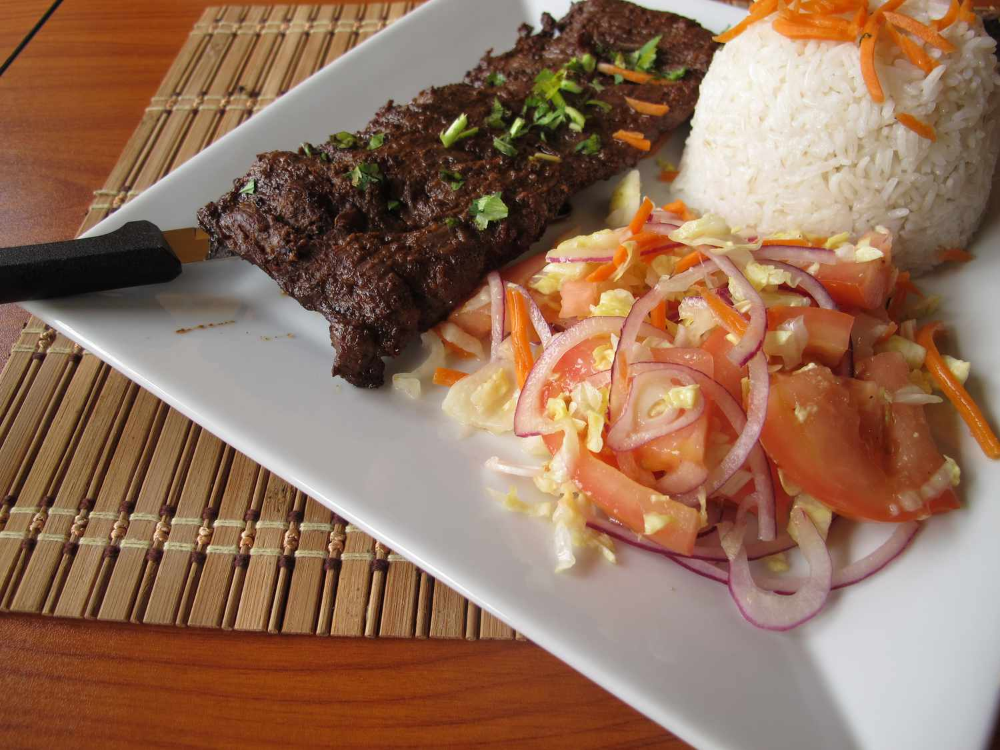
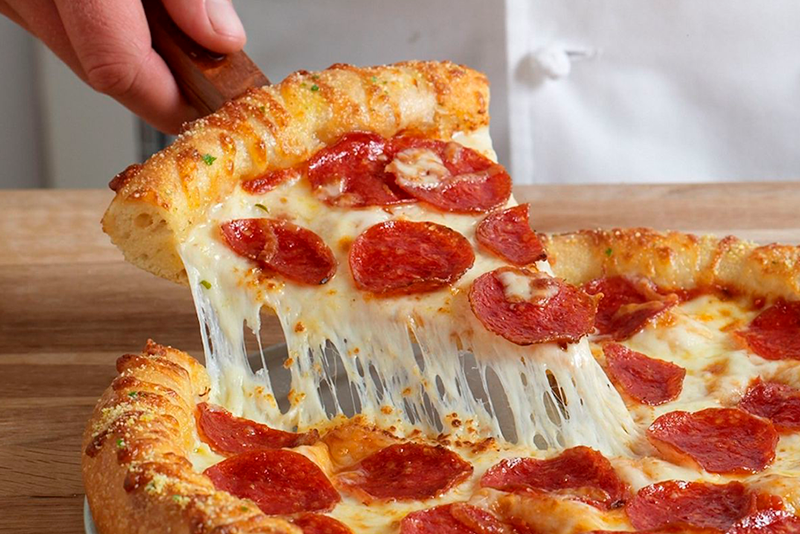

Descripción Personal
Mi nombre es Fredy Osvaldo de León Turcios, tengo 14 años de edad, vivo en aldea El Manantial...
Información Personal
sisteclab2@gmail.com
Fredy de León
Fredy Turcios
Fredy el Guapo
Mis Hobbies
Ver mis hobbies




Mis Fobias
Información Académica
- 2025 - Segundo Básico - INEB
- 2024 - Primero Básico - INEB
- 2023 - Sexto - EOUM Cristóbal Colón
- 2022 - Quinto - EOUM Cristóbal Colón
- 2021 - Cuarto - EOUM Cristóbal Colón
- 2020 - Tercero - EOUM Cristóbal Colón
- 2019 - Segundo - EOUM Cristóbal Colón
- 2018 - Primero - EOUM Cristóbal Colón
Otros Datos
- Equipo favorito: FC Barcelona
- Artista favorito: Fuerza Regida
- Jugador favorito: Messi
- Época favorita: Invierno
- Animal favorito: Loro
- Color favorito: Negro
- País favorito: París
Comidas Favoritas

